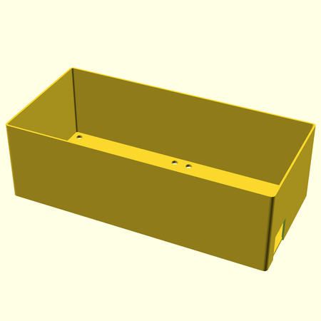
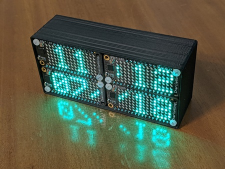
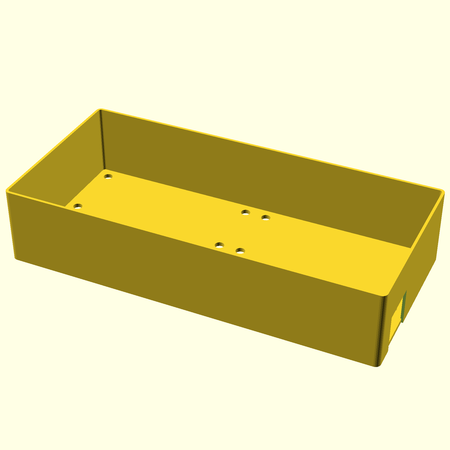

This is an enclosure for the Adafruit Quad 2x2 FeatherWing. It is designed to accomodate a stack of 3 boards with regular height headers, but you can easily change the height by editing the OpenSCAD file and regenerating it.
Enclosure for 2x2 FeatherWing
 Short Enclosure for 2x2 FeatherWing
Print Settings
Designed for 0.4mm extrusion width. Overall, this is a very forgiving print. However, a manually added support under the opening for the USB plug won’t hurt.
Parts I used in my clock
For my clock design, I placed 4 displays in front, the Quad in the middle, a Feather M4 Experss and precision RTC FeatherWing in back. I also put a small lipo battery inside so the display would continue to run during short power outages. Then I used a whole pile of M2.5 screws (5mm are good) and 12mm spacers to put it together.
While I haven’t put the clock code online, there’s a series on my personal blog about some of the surrounding work that went into it:
- Quad CharliePlex FeatherWing hack
- Minimal Time-Zone Handling for CircuitPython
- Calibrating the DS3231 and PFC8523 RTCs
- Helpful scripts for CircuitPython & Real Time Clocks (RTCs)
Downloads
Enclosure for 2x2 FeatherWing:
Short Enclosure for 2x2 FeatherWing:
Untested design, 22mm height, intended for two layers of board.
STL generated with -Dheight=22